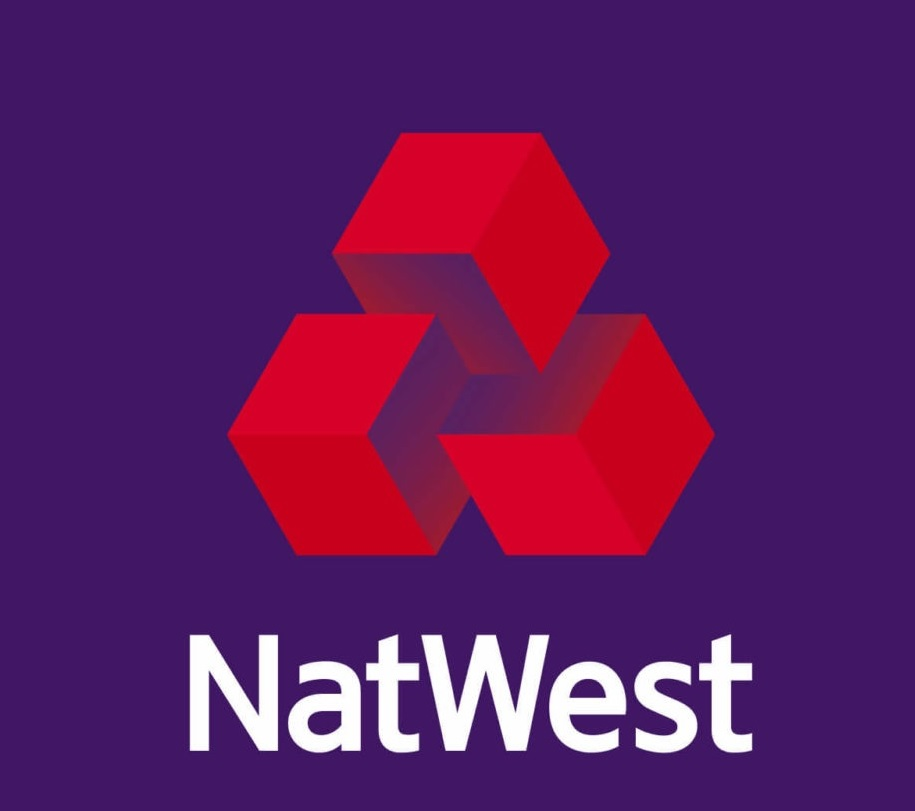

Professional Experience
Contents
Professional Experience#
RDX Works#
Lead Economist
Jan 2022 - Aug 2022
Worked as economist for the Radix network’s layer-one protocol developer, deploying macroeconomic experience and quantitative modelling knowledge in Decentralized Finance (DeFi) protocol design.
Worked in the design of an algorithmic stablecoin protocol and smart contracts to support the network’s product offering.
HSBC#
Senior Manager
Apr 2021 - Jan 2022
Worked in Group Risk for Scenario Planning & Stress Testing division, within the Climate team. Parameterising and expanding transition and physical risk regulatory stress test scenarios supplied by the PRA and other regulators (including HKMA, EBA, and MAS etc.).
Worked on Transition and Physical risk PD & LGD model prototypes for the PRA’s 2021 Climate Biennial Stress Test (CBES).
Worked on CC Scenario design, vendor model selection and build, MEV expansion, ECL engine replication in Python.
PwC#
Senior Manager
Aug 2018 - Apr 2021
Worked in the risk modelling services group’s banking division team. Built and audited macroeconomic, stress testing, IFRS9 and IRB models for clients. Experience leading teams to design and successfully implement modelling projects for clients in the climate change stress testing space.
Led development of Wholesale Credit risk ECL modelling suite in R, for banking client. Covered Macro PD model, LGD modelling and Through-the-Cycle and PiT Transition Matrix estimation (cohort and duration approach).
Prototyped and then led team building Transition Risk Climate model in R. Based on UN Climate paper on TCFD (2018).
Developed a Physical Climate Risk model based on LDA frequency-severity convolution approach with Monte Carlo VaR. Development in R with Shiny front-end. Also used in Cyber Security risk which led to sale of £250K to client.
Barclays#
Vice President
Aug 2017 - Jul 2018
Worked in the Enterprise-Wide Risk and Stress Testing functions. Produced economic scenarios for internal and regulatory stress tests and IFRS9/ICAAP. Leveraged in-house model to create scenarios and probability weights for IFRS9 submissions.
Led project to translate probability weight model from Matlab & R to SAS that covered various teams across bank.
NatWest#

Manager
Dec 2015 - Aug 2017
Worked in Stress Testing and built in-house, probability weights calculation methodology, and model for scenario parameterization and expansion, including EViews and R versions for IFRS9 & ICAAPs. Presented to the Bank of England’s Prudential Regulation Authority (PRA).
Prototyped and led team building bank’s scenario generation engine for stress testing scenarios & IFRS9 probability weights.
Built toolkit to monitor systemic risks to macro/finance based on IMF Systemic Monitoring methodology.
Fathom Consulting#
Senior Analyst
May 2011- Nov 2015
Produced econometric models (in EViews, Matlab, R and VBA), compiled regular thematic reports on the global economy and presented house views to clients. Developed interactive tools to communicate analysis to stakeholders.
Prototyped and built model to extract market-implied conditional Sovereign PD extracted from CDS via applying copulas.
Coded up the ECB published Now-Casting methodology using Kalman filtering, VAR and bridging with factors.